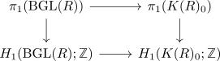

pi_1 of the k-theory spectrum as K1
Proposition
Proof
Let $K(R)_0$ denote the connected component of $0$.
\begin{align*}
\pi_1(K(R)) = \pi_1(0 \mathrm{ component of } K(R))
\end{align*}
Then using the M infinity to group completion gives
\begin{align*}
\mathrm{Proj}_{\infty}(R) \rightarrow \mathrm{Proj}(R)^{\mathrm{grp}} \eqqcolon K(R)
\end{align*}
which induces on the zeroth component a map
\begin{align*}
\mathrm{BGL}(R) \rightarrow K(R)_0
\end{align*}
This fits into a commutative diagram (using absolute Hurewicz theorem)

Then the right vertical map is an isomorphism since $K(R)$ is a cartesian commutative Group and hence $\pi_1(-)$ is abelian Furthermore the bottom map is an isomorphism by group completion theorem for the colimit.
By the first homology functor as abelianization of the first homotopy functor we note that
\begin{align*}
H_1(\mathrm{BGL}(R); \mathbb{Z}) \cong& \pi_1(\mathrm{BGL}(R))^{\mathrm{ab}) \\
\cong& \mathrm{GL}(R)^{\mathrm{ab}}
\eqqcolon K_1(R)
\end{align*}
where we have used the delooping of $B$ and